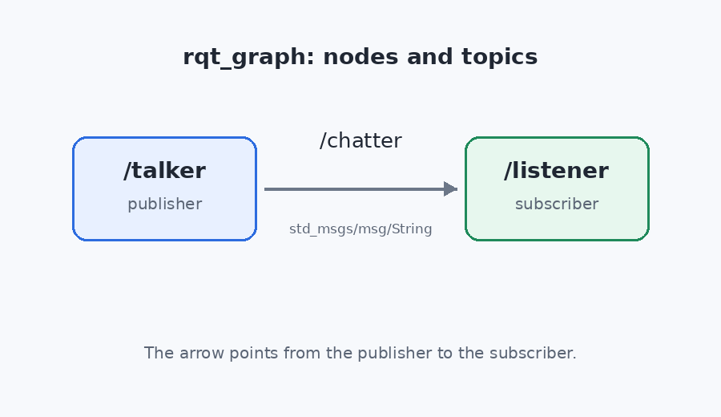

工具与测试
节点能运行之后，下一步是让它可观察、可复现、可验证。本部分使用日志、
ros2 bag、rqt、单元测试、launch_testing 与包检查工具，
把调试和验收变成固定流程。
先读过 0.1、0.4、1.1、1.2、2.4 与 5.1–5.2：会构建工作空间，会写
发布者与订阅者，会声明节点参数，会写 launch 文件。工作空间位于
$HOME/ros2_ws。
8.1日志与诊断
日志是节点在运行期间留下的结构化记录。ROS 2 的日志接口按严重程度
分成五级：DEBUG、INFO、WARN、
ERROR、FATAL。默认级别是
INFO，低于该级别的 DEBUG 不输出。
每条日志同时写入终端与 /rosout 话题，远程工具可以订阅
/rosout 收集全部节点的记录。
日志级别
C++ 节点使用 RCLCPP_INFO、RCLCPP_WARN 等宏，
第一个参数是日志器，通常取 get_logger()。级别用于区分
信息的用途：INFO 报告正常运行状态，WARN
报告可恢复的异常，ERROR 报告本次操作失败，
FATAL 表示节点无法继续。
日志器名默认等于节点名。下面的节点在启动时分别打印四个级别， 随后以 100 毫秒为周期打印八次计数，并在固定时刻插入警告与错误。 计数到八后主动关闭，因此每次运行的输出长度一致。
#include <chrono>
#include <memory>
#include "rclcpp/rclcpp.hpp"
using namespace std::chrono_literals;
class LoggingDemo : public rclcpp::Node
{
public:
LoggingDemo()
: Node("logging_demo")
{
burst_ = declare_parameter<bool>("burst_throttled", false);
RCLCPP_DEBUG(get_logger(), "debug: 这条默认不显示");
RCLCPP_INFO(get_logger(), "info: 节点启动");
RCLCPP_WARN(get_logger(), "warn: 电池电量 35%%");
RCLCPP_ERROR(get_logger(), "error: 激光雷达未就绪");
if (burst_) {
RCLCPP_INFO(get_logger(), "burst: 连续调用 5 次节流日志");
for (int i = 0; i < 5; ++i) {
RCLCPP_INFO_THROTTLE(
get_logger(), *get_clock(), 1000, "throttled: 同一秒内只显示一次");
}
RCLCPP_INFO(get_logger(), "burst: 调用结束");
timer_ = create_wall_timer(
200ms, [this]() {
RCLCPP_INFO(get_logger(), "done");
rclcpp::shutdown();
});
return;
}
timer_ = create_wall_timer(100ms, [this]() {tick();});
}
private:
void tick()
{
++tick_;
RCLCPP_DEBUG(get_logger(), "debug: tick=%d", tick_);
RCLCPP_INFO(get_logger(), "tick=%d", tick_);
if (tick_ == 3) {
RCLCPP_WARN(get_logger(), "warn: tick=3 温度 41.0");
}
if (tick_ == 6) {
RCLCPP_ERROR(get_logger(), "error: tick=6 雷达丢帧");
}
if (tick_ >= 8) {
RCLCPP_INFO(get_logger(), "done");
rclcpp::shutdown();
}
}
bool burst_{false};
int tick_{0};
rclcpp::TimerBase::SharedPtr timer_;
};
int main(int argc, char ** argv)
{
rclcpp::init(argc, argv);
rclcpp::spin(std::make_shared<LoggingDemo>());
rclcpp::shutdown();
return 0;
}运行时级别
--log-level 可以在启动节点时修改日志级别，不必重新编译。
写法是 --log-level 日志器名:=级别；只写
--log-level debug 会把 ROS 2 客户端库内部的调试日志也打开，
输出会混入大量库函数记录。指定节点自己的日志器名，才能只看到本节点的
调试信息。
节流
高频循环里的日志会淹没终端。带 _THROTTLE 后缀的宏接受
一个时间窗口，同一个调用点在窗口内只输出第一次，其余调用被丢弃。
RCLCPP_INFO_THROTTLE(logger, clock, 1000, ...) 表示每秒
最多输出一条。窗口由时钟计算，与循环次数无关。
默认级别下运行节点，DEBUG 不出现；两条警告与两条错误
夹在计数日志之间。最后一行 done 表示节点已准备关闭。
# 当前目录：$HOME/ros2_ws
ros2 run robot_nodes logging_demo[INFO] [logging_demo]: info: 节点启动 [WARN] [logging_demo]: warn: 电池电量 35% [ERROR] [logging_demo]: error: 激光雷达未就绪 [INFO] [logging_demo]: tick=1 [INFO] [logging_demo]: tick=2 [INFO] [logging_demo]: tick=3 [WARN] [logging_demo]: warn: tick=3 温度 41.0 [INFO] [logging_demo]: tick=4 [INFO] [logging_demo]: tick=5 [INFO] [logging_demo]: tick=6 [ERROR] [logging_demo]: error: tick=6 雷达丢帧 [INFO] [logging_demo]: tick=7 [INFO] [logging_demo]: tick=8 [INFO] [logging_demo]: done
启动时那条 debug: 这条默认不显示 没有出现在输出里，
说明默认阈值高于 DEBUG。每条日志的方括号内是级别与
日志器名，后面是消息正文。
用 --log-level 只把 logging_demo 的级别降到 debug，运行节点并确认启动日志与每次计数前都多出一条 DEBUG。
[DEBUG] [logging_demo]: debug: 这条默认不显示 [INFO] [logging_demo]: info: 节点启动 [WARN] [logging_demo]: warn: 电池电量 35% [ERROR] [logging_demo]: error: 激光雷达未就绪 [DEBUG] [logging_demo]: debug: tick=1 [INFO] [logging_demo]: tick=1 [DEBUG] [logging_demo]: debug: tick=2 [INFO] [logging_demo]: tick=2 [DEBUG] [logging_demo]: debug: tick=3 [INFO] [logging_demo]: tick=3 [WARN] [logging_demo]: warn: tick=3 温度 41.0 [DEBUG] [logging_demo]: debug: tick=4 [INFO] [logging_demo]: tick=4 [DEBUG] [logging_demo]: debug: tick=5 [INFO] [logging_demo]: tick=5 [DEBUG] [logging_demo]: debug: tick=6 [INFO] [logging_demo]: tick=6 [ERROR] [logging_demo]: error: tick=6 雷达丢帧 [DEBUG] [logging_demo]: debug: tick=7 [INFO] [logging_demo]: tick=7 [DEBUG] [logging_demo]: debug: tick=8 [INFO] [logging_demo]: tick=8 [INFO] [logging_demo]: done
看答案
--log-level 接受 日志器名:=级别 的形式。
只写 debug 会把整个进程的日志器都降到调试级，
连带打开 rcl 与 rclcpp 的内部输出；
指定 logging_demo 后只影响本节点。
# 当前目录：$HOME/ros2_ws
ros2 run robot_nodes logging_demo --ros-args --log-level logging_demo:=debug[DEBUG] [logging_demo]: debug: 这条默认不显示 [INFO] [logging_demo]: info: 节点启动 [WARN] [logging_demo]: warn: 电池电量 35% [ERROR] [logging_demo]: error: 激光雷达未就绪 [DEBUG] [logging_demo]: debug: tick=1 [INFO] [logging_demo]: tick=1 [DEBUG] [logging_demo]: debug: tick=2 [INFO] [logging_demo]: tick=2 [DEBUG] [logging_demo]: debug: tick=3 [INFO] [logging_demo]: tick=3 [WARN] [logging_demo]: warn: tick=3 温度 41.0 [DEBUG] [logging_demo]: debug: tick=4 [INFO] [logging_demo]: tick=4 [DEBUG] [logging_demo]: debug: tick=5 [INFO] [logging_demo]: tick=5 [DEBUG] [logging_demo]: debug: tick=6 [INFO] [logging_demo]: tick=6 [ERROR] [logging_demo]: error: tick=6 雷达丢帧 [DEBUG] [logging_demo]: debug: tick=7 [INFO] [logging_demo]: tick=7 [DEBUG] [logging_demo]: debug: tick=8 [INFO] [logging_demo]: tick=8 [INFO] [logging_demo]: done
每次计数前多出的 DEBUG 行来自调试日志；级别降到
debug 后它才越过阈值。其余 INFO、
WARN、ERROR 行不受影响。
用参数 burst_throttled:=true 让节点连续调用五次节流日志，确认一秒内只保留第一条。
[INFO] [logging_demo]: info: 节点启动 [WARN] [logging_demo]: warn: 电池电量 35% [ERROR] [logging_demo]: error: 激光雷达未就绪 [INFO] [logging_demo]: burst: 连续调用 5 次节流日志 [INFO] [logging_demo]: throttled: 同一秒内只显示一次 [INFO] [logging_demo]: burst: 调用结束 [INFO] [logging_demo]: done
看答案
参数为真时，节点在定时器第一次回调里连续调用五次
RCLCPP_INFO_THROTTLE，周期为一秒。五次调用落在同一秒，
宏只放行第一次，其余四次被丢弃。
# 当前目录：$HOME/ros2_ws
ros2 run robot_nodes logging_demo --ros-args -p burst_throttled:=true[INFO] [logging_demo]: info: 节点启动 [WARN] [logging_demo]: warn: 电池电量 35% [ERROR] [logging_demo]: error: 激光雷达未就绪 [INFO] [logging_demo]: burst: 连续调用 5 次节流日志 [INFO] [logging_demo]: throttled: 同一秒内只显示一次 [INFO] [logging_demo]: burst: 调用结束 [INFO] [logging_demo]: done
输出里只有一条 throttled，前后各有一条
burst 标记。节流只减少重复日志，不改变程序逻辑。
你现在能写什么：按级别写日志，用 --log-level 只打开指定日志器的调试输出，并用节流宏限制高频日志的数量。
8.2ros2 bag
ros2 bag 把话题消息按时间顺序写入磁盘，之后可以离线查看
或重新发布。录制文件称为包（bag），默认存储格式是 MCAP。包保留消息的
原始时间戳，回放时按原时间间隔发送，因此适合复现一次运行。
录制
ros2 bag record -o 目录名 /话题名 启动录制节点，
-o 指定输出目录，目录不存在时自动创建。按
Ctrl+C 结束录制并写完文件。若录制开始时话题还没有发布者，
加上 --include-unpublished-topics 可以先建立订阅，
等发布者出现后立即记录。发布者可以用参数
wait_for_subscriber:=true 等到订阅者连接后再发送，
避免开头几条消息丢失。
查看
ros2 bag info 目录名 打印文件大小、存储格式、起止时间、
消息总数与每个话题的条数。消息条数由录制期间实际收到的消息决定，
时长由首尾消息的时间戳决定；两者都不等于命令运行的时间。
回放
ros2 bag play 目录名 把包重新发布到同名话题。
回放期间可以像对待实时节点一样订阅、查看或记录。包里的时间戳是过去的
时刻，直接按原速回放时消息会追着实时时钟发送；加
--delay 可以先等待订阅者连接，加 --rate
可以放慢速度，便于观察。
终端 A 启动录制，终端 B 启动发布者。发布者等到录制端订阅后再发三条
消息，停止录制时包里正好三条。停止录制后用
bag info 检查条数。
# 终端 A，当前目录：$HOME/ros2_ws
ros2 bag record -o demo_bag --include-unpublished-topics /chatter# 终端 B，当前目录：$HOME/ros2_ws
ros2 run robot_nodes talker 3 --ros-args -p wait_for_subscriber:=true# 终端 A，按 Ctrl+C 结束录制后
ros2 bag info demo_bag | grep -E '^(Messages|Topic information)'Messages: 3 Topic information: Topic: /chatter | Type: std_msgs/msg/String | Count: 3 | Serialization Format: cdr
发布者总共发了三条，包里也是三条。话题信息一行给出话题名、消息类型、
条数与序列化格式。Messages 后面的空格由
bag info 对齐输出，复制时不必保留这些空格。
录制三条 /chatter 消息，回放这个包，并用 ros2 topic echo 只取第一条消息的 data 字段。
[INFO] [talker]: publishing: 'hello 0' [INFO] [talker]: publishing: 'hello 1' [INFO] [talker]: publishing: 'hello 2' hello 0 ---
看答案
Jazzy 的 ros2 bag record 没有按时间自动停止的参数，
因此用 timeout -s INT 在六秒后发送中断信号，让录制正常
收尾。--include-unpublished-topics 让录制端提前建立订阅，
避免发布者先启动、录制端后连接而漏掉开头。
# 当前目录：$HOME/ros2_ws
tmp=$(mktemp -d)
bag="$tmp/bag"
timeout -s INT 6s ros2 bag record -o "$bag" \
--include-unpublished-topics /chatter >/dev/null 2>&1 &
sleep 1
ros2 run robot_nodes talker 3 --ros-args -p wait_for_subscriber:=true
wait || true
timeout 15 ros2 topic echo /chatter std_msgs/msg/String --once --field data &
sleep 1
ros2 bag play --delay 2 --rate 0.2 "$bag" >/dev/null 2>&1
wait
rm -rf "$tmp"[INFO] [talker]: publishing: 'hello 0' [INFO] [talker]: publishing: 'hello 1' [INFO] [talker]: publishing: 'hello 2' hello 0 ---
talker 等待订阅者连接后才发送，录制端因此能收到三条。
回放时 --delay 2 给 echo 留出启动时间，
--rate 0.2 放慢速度；--once 只取第一条，
所以最终只打印 hello 0。
只录制两条 /chatter 消息，用 bag info 打印消息总数和话题条数，确认两者都是 2。
[INFO] [talker]: publishing: 'hello 0' [INFO] [talker]: publishing: 'hello 1' Messages: 2 Topic information: Topic: /chatter | Type: std_msgs/msg/String | Count: 2
看答案
录制流程与上一题相同，只把发布条数改成两条。发布者退出后录制端继续
运行到超时，包文件因此完整。再用 bag info 读取元数据。
# 当前目录：$HOME/ros2_ws
tmp=$(mktemp -d)
bag="$tmp/two_messages"
timeout -s INT 5s ros2 bag record -o "$bag" \
--include-unpublished-topics /chatter >/dev/null 2>&1 &
sleep 1
ros2 run robot_nodes talker 2 --ros-args -p wait_for_subscriber:=true
wait || true
ros2 bag info "$bag" | awk '
/^Messages:/ {print "Messages: " $2}
/^Topic information:/ {
sub(/ \| Serialization Format: cdr/, "")
print
}
'
rm -rf "$tmp"[INFO] [talker]: publishing: 'hello 0' [INFO] [talker]: publishing: 'hello 1' Messages: 2 Topic information: Topic: /chatter | Type: std_msgs/msg/String | Count: 2
Messages 是包内消息总数，话题信息里的 Count
是该话题的条数。两者都是 2，说明两条消息都写入了同一个话题。
你现在能写什么：按话题录制包，用 bag info 核对消息条数与时长，回放包并用话题命令读取其中的消息。
8.3rqt（选学）
rqt 是基于 Qt 的图形工具集合，每个功能是一个插件。它不改变节点行为， 只把节点图、话题内容、参数与服务调用集中到窗口里。没有图形界面或 远程连接时，可以用同名的命令行工具完成同样的检查。
节点图
ros2 run rqt_graph rqt_graph 打开节点图。方框表示节点，
箭头表示消息流向，边上的标签是话题名。发布者指向订阅者；双向箭头说明
两端同时发布和订阅同一个话题。图里出现 /ros2cli
这类临时节点是命令行查询自身创建的，不代表业务节点。

/chatter 连接时的拓扑。箭头从发布者
/talker 指向订阅者 /listener，边上标注
消息类型 std_msgs/msg/String。
话题与消息
rqt_topic 列出所有话题、类型、带宽与发布/订阅计数，
展开话题可以查看最近一条消息的字段。rqt_console
汇总 /rosout 的日志，可以按级别过滤；rqt_plot
把数值字段画成曲线，字符串消息不能直接绘图。
命令行核对
图形窗口里的信息来自 ROS 2 图。用 ros2 node list 看节点，
用 ros2 topic info 看发布者与订阅者数量，用
ros2 topic echo 看消息内容。命令行输出适合记录在报告里，
也适合在没有显示器的机器上使用。
先在一个终端运行 listener，再在另一个终端运行发布者，
然后打开节点图。图中应出现一条从 /talker 到
/listener 的边。关闭图形窗口后，用命令行核对节点名。
# 当前目录：$HOME/ros2_ws
ros2 run rqt_graph rqt_graph# 图形窗口关闭后，在节点仍运行的终端旁执行
ros2 node list | sort/listener /talker
两个节点名都是完全限定名。节点图里如果还出现
/ros2cli_数字，那是执行 node list 时临时
创建的查询节点，查询结束后消失。
启动一个订阅者和一个发布者，用 ros2 node list 列出节点，再用 ros2 topic info /chatter 确认发布者与订阅者各有一个。
/listener /talker Type: std_msgs/msg/String Publisher count: 1 Subscription count: 1
看答案
先启动订阅者，再启动发布者，两个节点都出现后查询。节点列表按字母
排序，因此 /listener 在前。topic info
统计的是当前存活的端点，不是历史连接。
# 当前目录：$HOME/ros2_ws
ros2 run robot_nodes listener >/dev/null 2>&1 &
sleep 0.5
ros2 run robot_nodes talker 20 >/dev/null 2>&1 &
sleep 0.5
ros2 node list | grep -E '^/(listener|talker)$' | sort
ros2 topic info /chatter/listener /talker Type: std_msgs/msg/String Publisher count: 1 Subscription count: 1
类型行给出消息类型，后两行分别是发布端与订阅端数量。两个计数都是 1， 与启动的节点数一致。
用 ros2 topic echo 读取 /chatter 的第一条消息，只打印 data 字段；发布者要等订阅者连接后再发送。
[INFO] [talker]: publishing: 'hello 0' hello 0 ---
看答案
ros2 topic echo 的 --once 在收到第一条消息后
退出；--field data 只打印字段值。发布者的
wait_for_subscriber 保证 echo 已经订阅后再
发布，否则第一条消息可能在连接完成前发出。
# 当前目录：$HOME/ros2_ws
timeout 15 ros2 topic echo /chatter std_msgs/msg/String --once --field data &
sleep 1
ros2 run robot_nodes talker 1 --ros-args -p wait_for_subscriber:=true
wait[INFO] [talker]: publishing: 'hello 0' hello 0 ---
第一行是发布者自己的日志，后两行来自 echo：字段值和分隔
线。talker 只发一条，因此 echo 不会读到
hello 1。
你现在能写什么：用 rqt_graph 读节点与话题的拓扑，用 rqt_topic 与 rqt_console 查看消息和日志，并在没有图形界面时用命令行完成同样的核对。
8.4单元测试与 launch_testing
单元测试检查不依赖 ROS 通信的函数，启动测试检查节点启动后的实际行为。
两者都由 colcon test 调用，结果写入
build/包名/test_results。测试失败不会阻止构建产物生成，
但会让 colcon test 的退出码非零。
gtest
ament_cmake_gtest 提供 ament_add_gtest，
把测试源文件编译成可执行文件，并注册到 CTest。测试函数用
TEST(套件名, 用例名) 定义，断言用
EXPECT_* 或 ASSERT_*。下面的面积函数在宽或高
为负数时抛出 std::invalid_argument，测试只检查合法输入。
#ifndef ROBOT_NODES__AREA_HPP_
#define ROBOT_NODES__AREA_HPP_
namespace robot_nodes
{
// 计算矩形面积。宽或高为负数时抛出 std::invalid_argument。
double rectangle_area(double width, double height);
} // namespace robot_nodes
#endif // ROBOT_NODES__AREA_HPP_#include "robot_nodes/area.hpp"
#include <stdexcept>
namespace robot_nodes
{
double rectangle_area(double width, double height)
{
if (width < 0.0 || height < 0.0) {
throw std::invalid_argument("width and height must be non-negative");
}
return width * height;
}
} // namespace robot_nodes#include <gtest/gtest.h>
#include "robot_nodes/area.hpp"
TEST(AreaTest, ComputesProduct)
{
EXPECT_DOUBLE_EQ(robot_nodes::rectangle_area(2.0, 3.0), 6.0);
}
TEST(AreaTest, ZeroSideGivesZero)
{
EXPECT_DOUBLE_EQ(robot_nodes::rectangle_area(0.0, 5.0), 0.0);
}
CMake 中用 ament_add_gtest(test_area test/test_area.cpp src/area.cpp)
把函数实现和测试一起编译，target_include_directories
指向头文件目录。测试目标只在 BUILD_TESTING 打开时生成。
launch_testing
launch_testing 把 launch 与 unittest 组合：
generate_test_description 返回要启动的节点，
ReadyToTest 标记启动完成，测试类在节点运行期间执行断言。
启动测试适合检查话题是否出现、消息内容是否正确、节点退出码是否为零。
import time
import unittest
import launch
import launch_ros.actions
import launch_testing
import launch_testing.actions
import rclpy
from std_msgs.msg import String
def generate_test_description():
talker = launch_ros.actions.Node(
package="robot_nodes",
executable="talker",
arguments=["3"],
parameters=[{"wait_for_subscriber": True}],
)
return (
launch.LaunchDescription(
[
talker,
launch_testing.actions.ReadyToTest(),
]
),
{"talker": talker},
)
class TestTalker(unittest.TestCase):
def test_first_message(self):
rclpy.init()
node = rclpy.create_node("test_listener")
messages = []
subscription = node.create_subscription(
String, "/chatter", lambda msg: messages.append(msg.data), 10
)
deadline = time.time() + 5.0
while time.time() < deadline and not messages:
rclpy.spin_once(node, timeout_sec=0.1)
node.destroy_node()
rclpy.shutdown()
self.assertTrue(messages, "没有收到 /chatter 消息")
self.assertEqual(messages[0], "hello 0")
launch_ros.actions.Node 的参数与命令行一致；
parameters 里的 wait_for_subscriber 让发布者
等到测试订阅者连接后再发送，避免第一条消息丢失。测试类创建订阅者，
在五秒内循环 spin_once，收到消息后断言内容是
hello 0。
运行测试
colcon test --packages-select 包名 运行该包注册的全部测试。
--ctest-args -R 正则 只运行名字匹配的测试。
colcon test-result --verbose 汇总每个测试的结果与日志路径。
测试超时、断言失败与进程崩溃都会记为失败。
两个测试分别覆盖纯函数与节点启动。第一个是 gtest，第二个是 launch_testing；运行后汇总结果显示五项测试全部通过。
# 当前目录：$HOME/ros2_ws
colcon test --packages-select robot_nodes \
--ctest-args -R 'test_area|test_talker'
colcon test-result --verboseStarting >>> robot_nodes ... Finished <<< robot_nodes Summary: 5 tests, 0 errors, 0 failures, 0 skipped
第一行与最后一行来自 colcon test，中间的
Summary 来自 colcon test-result。
省略号处是每个测试的启动与计时信息，不影响结果。
给面积函数增加一个边界测试：宽为负数时抛出 std::invalid_argument。用 gtest 编译并运行，确认一个用例通过。
Running main() from ./googletest/src/gtest_main.cc [==========] Running 1 test from 1 test suite. [----------] Global test environment set-up. [----------] 1 test from AreaTest [ RUN ] AreaTest.NegativeSideThrows [ OK ] AreaTest.NegativeSideThrows (0 ms) [----------] 1 test from AreaTest (0 ms total) [----------] Global test environment tear-down [==========] 1 test from 1 test suite ran. (0 ms total) [ PASSED ] 1 test.
看答案
测试文件只包含 gtest 头文件、标准异常头文件与面积函数声明。把文件保存到
src/robot_nodes/test/ 下。编译时把仓库里的 area.cpp
一起传给 g++，链接 gtest 与 gtest_main
即可。EXPECT_THROW 断言表达式抛出指定类型的异常。
#include <gtest/gtest.h>
#include <stdexcept>
#include "robot_nodes/area.hpp"
TEST(AreaTest, NegativeSideThrows)
{
EXPECT_THROW(robot_nodes::rectangle_area(-1.0, 2.0), std::invalid_argument);
}# 当前目录：$HOME/ros2_ws
tmp=$(mktemp -d)
g++ -std=c++17 -I "$HOME/ros2_ws/src/robot_nodes/include" \
src/robot_nodes/test/test_negative.cpp \
"$HOME/ros2_ws/src/robot_nodes/src/area.cpp" \
-lgtest -lgtest_main -lpthread -o "$tmp/test_negative"
"$tmp/test_negative"
rm -rf "$tmp"Running main() from ./googletest/src/gtest_main.cc [==========] Running 1 test from 1 test suite. [----------] Global test environment set-up. [----------] 1 test from AreaTest [ RUN ] AreaTest.NegativeSideThrows [ OK ] AreaTest.NegativeSideThrows (0 ms) [----------] 1 test from AreaTest (0 ms total) [----------] Global test environment tear-down [==========] 1 test from 1 test suite ran. (0 ms total) [ PASSED ] 1 test.
输出只运行一个用例，[ PASSED ] 1 test. 表示通过。
用例名 NegativeSideThrows 与测试文件中的名字一致。
写一个 launch_testing 测试：启动发布者，订阅 /chatter，断言第一条消息是 hello 0，并检查发布者退出码为 0。
Ran 1 test OK
看答案
测试文件分两部分。generate_test_description 启动发布者并
插入 ReadyToTest；普通测试类订阅 /chatter，
在五秒内等待第一条消息；post_shutdown_test 在进程退出后
检查退出码。把文件保存到 src/robot_nodes/test/ 下，
launch_test 直接运行该文件，不需要构建包。
import time
import unittest
import launch
import launch_ros.actions
import launch_testing
import launch_testing.actions
import launch_testing.asserts
import rclpy
from std_msgs.msg import String
def generate_test_description():
talker = launch_ros.actions.Node(
package="robot_nodes",
executable="talker",
arguments=["2"],
parameters=[{"wait_for_subscriber": True}],
)
return (
launch.LaunchDescription(
[
talker,
launch_testing.actions.ReadyToTest(),
]
),
{"talker": talker},
)
class TestSubscriber(unittest.TestCase):
def test_first_message(self):
rclpy.init()
node = rclpy.create_node("test_subscriber")
messages = []
node.create_subscription(
String, "/chatter", lambda msg: messages.append(msg.data), 10
)
deadline = time.time() + 5.0
while time.time() < deadline and not messages:
rclpy.spin_once(node, timeout_sec=0.1)
node.destroy_node()
rclpy.shutdown()
self.assertTrue(messages, "没有收到 /chatter 消息")
self.assertEqual(messages[0], "hello 0")
@launch_testing.post_shutdown_test()
class TestExit(unittest.TestCase):
def test_exit_code(self, proc_info):
launch_testing.asserts.assertExitCodes(proc_info, allowable_exit_codes=[0])# 当前目录：$HOME/ros2_ws
launch_test src/robot_nodes/test/test_subscriber.launch.py 2>&1 |
sed -n 's/^Ran 1 test.*/Ran 1 test/p; /^OK$/p' |
awk '!seen[$0]++'Ran 1 test OK
launch_test 用 Python 的 unittest 运行测试，最后的
OK 表示订阅断言与退出码断言都通过。前一行给出运行的
测试数量；sed 去掉该行的计时，并只保留这一行与
OK。结果会打印两遍，awk 去掉重复行。
你现在能写什么：用 gtest 测试纯函数，用 launch_testing 启动节点并断言话题内容与退出码，再用 colcon test 与 test-result 运行和汇总结果。
8.5包依赖、安装规则与工程质量
包能否被别的包找到，取决于 package.xml 的依赖声明与 CMake
的安装规则。依赖声明影响构建顺序和环境变量，安装规则决定文件被复制到
install/包名 的哪个子目录。两者都正确，包才能被
ros2 run 与 ros2 launch 使用。
依赖类型
build_depend 只在构建时需要，exec_depend
只在运行时需要，build_export_depend 用于把头文件或库
暴露给下游包，depend 同时包含构建、导出与运行三种。
节点直接包含的头文件所对应的包应写在 depend 中。
CMake 里用 ament_export_dependencies 把依赖继续传给
下游包。
安装规则
install(TARGETS ... DESTINATION lib/${PROJECT_NAME})
把可执行文件放到 lib/包名，这是 ros2 run
查找的位置。install(DIRECTORY launch config ... DESTINATION
share/${PROJECT_NAME}) 把目录复制到
share/包名，launch 文件与参数文件从这里加载。
ros2 pkg prefix 包名 打印安装前缀，
ros2 pkg executables 包名 列出已安装的可执行文件。
代码检查
ament_lint_auto 根据 package.xml 里的
lint 依赖调用 ament_cppcheck、ament_uncrustify
等检查器。lint 失败与编译失败不同：编译失败没有生成可执行文件；lint
失败通常已经生成可执行文件，只是测试阶段报告格式或静态检查问题。
先查依赖声明，再查安装后的可执行文件。三个第 9 部分要用的节点已经
安装到 lib/robot_nodes，因此能被 ros2 run
找到。
# 当前目录：$HOME/ros2_ws
ros2 pkg xml robot_nodes | grep -E '<depend>(rclcpp|robot_interfaces)</depend>'
ros2 pkg executables robot_nodes | grep -E 'patrol_(controller|server)|target_source'<depend>rclcpp</depend> <depend>robot_interfaces</depend> robot_nodes patrol_controller robot_nodes patrol_server robot_nodes target_source
ros2 pkg xml 读取的是安装目录里的 package.xml，
修改源文件后要重新构建才会反映到查询结果。
ros2 pkg executables 的第一个字段是包名，第二个字段是
可执行文件名。
下面的依赖片段漏掉了发布者使用的 std_msgs。补上一条 <depend>std_msgs</depend>，重新构建，并用 ros2 pkg xml 确认声明已经进入安装目录。
<depend>rclcpp</depend>
<depend>robot_interfaces</depend><depend>std_msgs</depend>
看答案
发布者使用 std_msgs::msg::String，所以包在运行与构建时都
依赖 std_msgs。<depend> 同时表达这两种
依赖，是消息类型最常用的声明方式。
<depend>std_msgs</depend># 当前目录：$HOME/ros2_ws
colcon build --symlink-install --packages-select robot_nodes >/dev/null 2>&1
source install/setup.bash
ros2 pkg xml robot_nodes | grep -E '<depend>std_msgs</depend>'<depend>std_msgs</depend>
ros2 pkg xml 读取的是安装目录里的清单副本。重新构建后
新声明才会出现；只改源文件而不构建，查询结果仍是旧的。
给 robot_bringup 安装 launch 目录，重新构建，然后用 ros2 pkg prefix 找到安装前缀并列出其中的 launch 文件。
$HOME/ros2_ws/install/robot_bringup/share/robot_bringup/launch/6.4-lifecycle.launch.xml $HOME/ros2_ws/install/robot_bringup/share/robot_bringup/launch/9.4-patrol.launch.py $HOME/ros2_ws/install/robot_bringup/share/robot_bringup/launch/9.4-verify.sh $HOME/ros2_ws/install/robot_bringup/share/robot_bringup/launch/conditional.launch.xml $HOME/ros2_ws/install/robot_bringup/share/robot_bringup/launch/hello.launch.py $HOME/ros2_ws/install/robot_bringup/share/robot_bringup/launch/hello.launch.xml $HOME/ros2_ws/install/robot_bringup/share/robot_bringup/launch/lifecycle_two.launch.xml $HOME/ros2_ws/install/robot_bringup/share/robot_bringup/launch/param_nodes.launch.xml $HOME/ros2_ws/install/robot_bringup/share/robot_bringup/launch/talker.launch.xml
看答案
ros2 pkg prefix 打印包的安装前缀，launch 文件位于
前缀下的 share/包名/launch。用 find 列出
一层目录，既匹配普通文件，也匹配符号链接。
# 当前目录：$HOME/ros2_ws
prefix=$(ros2 pkg prefix robot_bringup)
find "$prefix/share/robot_bringup/launch" -maxdepth 1 \( -type f -o -type l \) | sort$HOME/ros2_ws/install/robot_bringup/share/robot_bringup/launch/10.1-inspect.launch.py $HOME/ros2_ws/install/robot_bringup/share/robot_bringup/launch/6.4-lifecycle.launch.xml $HOME/ros2_ws/install/robot_bringup/share/robot_bringup/launch/9.4-patrol.launch.py $HOME/ros2_ws/install/robot_bringup/share/robot_bringup/launch/9.4-verify.sh $HOME/ros2_ws/install/robot_bringup/share/robot_bringup/launch/conditional.launch.xml $HOME/ros2_ws/install/robot_bringup/share/robot_bringup/launch/hello.launch.py $HOME/ros2_ws/install/robot_bringup/share/robot_bringup/launch/hello.launch.xml $HOME/ros2_ws/install/robot_bringup/share/robot_bringup/launch/lifecycle_two.launch.xml $HOME/ros2_ws/install/robot_bringup/share/robot_bringup/launch/param_nodes.launch.xml $HOME/ros2_ws/install/robot_bringup/share/robot_bringup/launch/talker.launch.xml
九个文件都来自 install/robot_bringup/share/robot_bringup/launch。
路径前缀已换成读者环境中的 $HOME/ros2_ws；实际前缀由
ros2 pkg prefix 决定。
你现在能写什么：在 package.xml 中区分构建、运行与导出依赖，用 install 规则把可执行文件与 launch 目录放到正确位置，并用 ros2 pkg prefix 与 ros2 pkg executables 验证安装结果。